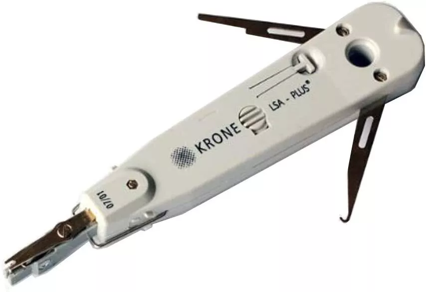

The punch down tool comes in several types, such as:
Standard Punch Down Tool
.jpg)
The standard punch down tool is the most commonly used type in network and telecommunications installations. This tool consists of a handle and a detachable blade, which is used to insert and cut wires into insulation-displacement connectors (IDCs). It often features a spring-loaded mechanism that delivers consistent pressure when pressing wires into the connector, ensuring a secure and tidy connection. The standard punch down tool is ideal for general-purpose tasks on patch panels, keystone jacks, and terminal blocks.
Impact Punch Down Tool

The impact punch down tool is a more advanced tool with an adjustable impact mechanism. This feature allows users to control the amount of force applied during the punch down process, which is crucial for ensuring that wires are properly seated and cleanly cut, especially in larger installations or denser materials. This tool is particularly useful in environments with high-density wiring or materials that require more precise pressure.
Non-Impact Punch Down Tool

The non-impact punch down tool is a simpler version of the punch down tool that lacks a spring-loaded or impact mechanism. The user must manually apply pressure to punch down and cut the wire. This tool is suitable for small-scale tasks or when working with softer materials where excessive force is not necessary. Despite its simplicity, this tool remains effective for basic tasks in network installations.
Multifunction Punch Down Tool
The multi-function punch down tool is a versatile tool that offers additional features such as wire stripping, cutting, and crimping. It is an ideal choice for technicians who need one tool for various cable management tasks. With this tool, technicians can perform multiple tasks with a single device, saving time and simplifying the installation and maintenance process.
110/66 Blade Punch Down Tool

The 110/66 blade punch down tool comes with interchangeable blades, specifically 110 and 66 blades, which are used for different types of blocks and jacks. The 110 blade is commonly used in newer installations, while the 66 blade is often used in older telephone systems. This tool is essential for technicians working with various types of termination blocks in different environments, ensuring they have the flexibility to handle both old and new installations.